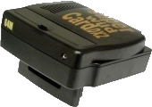
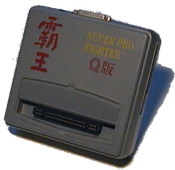
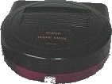
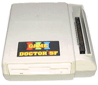
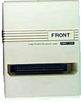
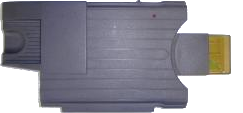
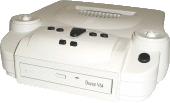
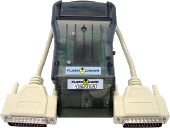
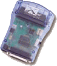
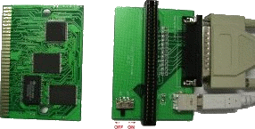

|
 Super WildCard 1.6XC/Super WildCard 2.8CC/Super Wild Card DX(2)/SWC 1993/1994/1995/19XX Front Far East/FFE http://www.front.com.tw (uCON64 options: --xswc, --xswcs)  Super Pro Fighter (Q/Q+)/Pro Fighter X (Turbo 2)/Double Pro Fighter (X Turbo) 1993/1994/19XX China Coach Limited/CCL http://www.ccltw.com.tw (uCON64 options: --xfig, --xfigs)  Super Com Pro (HK)/Super Magic Drive/SMD 19XX Front Far East/FFE http://www.front.com.tw (uCON64 options: --xsmd, --xsmds)  Game Doctor SF3(SF6/SF7)/Professor SF(SF II) 19XX Bung Enterprises Ltd http://www.bung.com.hk (uCON64 options: --xgd3, --xgd6, --xgd3s, --xgd6s)  Super Magicom/SMC 19XX Front Far East/FFE http://www.front.com.tw (uCON64 options: --xsmc, --xsmcr)  Magic Super Griffin/MSG 19XX Front Far East/FFE http://www.front.com.tw (uCON64 options: --xmsg)  Doctor V64 19XX Bung Enterprises Ltd http://www.bung.com.hk (uCON64 option: --xv64) |
 Doctor V64JR 19XX Bung Enterprises Ltd http://www.bung.com.hk (uCON64 option: --xdjr)  Flash Advance Linker 2001 Visoly http://www.visoly.com (uCON64 options: --xfal, --xfalc, --xfals, --xfalb)  Game Boy X-Changer 19XX Bung Enterprises Ltd http://www.bung.com.hk (uCON64 options: --xgbx, --xgbxs, --xgbxb) Mad Catz Camera Link (Game Boy Camera) XXXX Mad Catz Inc. http://www.madcatz.com (uCON64 option: --mccl)  DexDrive (PSX and Nintendo64 SRAMs) 19XX InterAct http://www.dexdrive.de (uCON64 option: --xdex) Lynxit (Lynx Cartridge Backup Board) 1997 K.Wilkins (custom selfmade) (uCON64 option: --xlit) (uCON64 options: --mksheet, --cdirip, and --nrgrip)  MD-PRO flash card programmer 200X Tototek http://www.tototek.com (uCON64 option: --xmd, --xmds) |